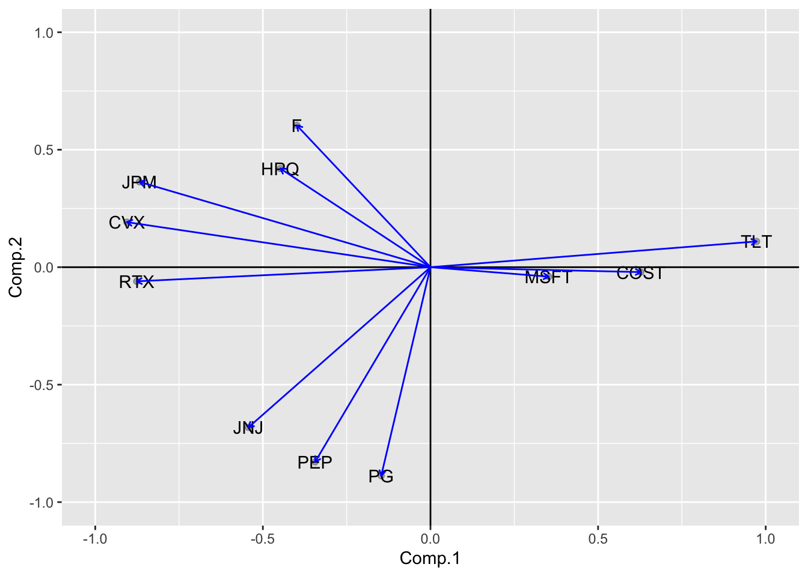

In this project, our primary goal is to enhance the risk-adjusted returns of a carefully curated portfolio of stocks. The focus of our analysis is on a equity/fixed income portfolio, nicknamed — “Pearl Fund.” This portfolio comprises Stocks & ETFs from a diverse array of industries and asset classes, namely:
Chevron Corporation (NYSE: CVX)
Costco Wholesale Corporation (NASDAQ: COST)
Ford Motor Company (NYSE: F)
HP Inc. (NYSE: HPQ)
Johnson & Johnson (NYSE: JNJ)
JPMorgan Chase & Co. (NYSE: JPM)
Microsoft Corporation (NASDAQ: MSFT)
PepsiCo, Inc. (NASDAQ: PEP)
Procter & Gamble Company (NYSE: PG)
Raytheon Technologies Corporation (NYSE: RTX)
iShares 20+ Year Treasury Bond ETF (NASDAQ: TLT)
Our approach involves the utilization of sophisticated financial models, which will be thoroughly explained later in this documentation. Furthermore, we leverage the power of various statistical and financial packages. We use th R programming language as our preferred tool for seamless portfolio optimization. Through a comprehensive analysis of historical data, we aim to evaluate and compare the performance of our portfolio against two benchmark index funds—S&P 500 and NASDAQ.
Once you’re familiarized with the code, feel free to explore and add your own curated collections of assets to see how they perform! To this make sure to enter the exchange traded ticker symbols to the stock_tickers vector in the second cell below. You must ensure that the assets you choose were traded on an exchange from a minimum of 2004 onward.
Before proceeding, ensure that the following libraries are installed and imported for seamless execution of the project:
Our analysis spans from January 1, 2004, until the latest market day close, providing a comprehensive view of various economic scenarios, including critical events such as the global financial crisis of 2008 and the SARS COVID-19 epidemic in 2020. We use the FRED economic data set to retrieve the most recent 10-year Treasury yields for our statistical testing we will run later.
We proceed to collect our monthly stock returns using the tidyquant functions. We split this data set into two sets, one set ranging from 2004 to 5 years prior to the current date and another one from the previous 5 years. After some data pre-processing, we display the 5 most recent monthly returns for each of our stocks for the entire timeline below.
Code
stock_returns_monthly_full_raw <-tq_get(stock_tickers, get ="stock.prices", from ="2004-01-01", to =Sys.Date())# Transformed Monthly Stock Returns (long format)stock_returns_monthly_full_long = stock_returns_monthly_full_raw %>%group_by(symbol) %>%tq_transmute(select = adjusted, mutate_fun = periodReturn, period ="monthly", col_rename ="MonthlyReturnsFull")# Transformed Monthly Stock Returns (wide format)stock_returns_monthly_full_wide =pivot_wider(stock_returns_monthly_full_long, names_from=symbol, values_from=MonthlyReturnsFull)# Displays the most recent 5 monthly stock returnsstock_returns_monthly_full_wide_decreasing = stock_returns_monthly_full_wide[order(stock_returns_monthly_full_wide$date, decreasing =TRUE), ]as.data.frame(head(stock_returns_monthly_full_wide_decreasing, 5))
Displayed below is a graphical representation of the total returns (%) for our chosen stocks covering the chosen time period. To facilitate accurate time series analysis, the data has been standardized.
Code
stock_returns_monthly_raw1 <- stock_returns_monthly_raw %>%group_by(symbol) %>%mutate(return =100* (close -first(close)) /first(close)) %>%ggplot(aes(date, return, color = symbol)) +geom_line() +labs(title ="Stock Performance Over Time Period",y ="Return (%)") +theme_minimal()stock_returns_monthly_raw1
The individual graphs below show the total return (to date) for each asset on their own scales.
Code
stock_returns_monthly_raw %>%group_by(symbol) %>%mutate(return =100* (close -first(close)) /first(close)) %>%ggplot(aes(date, return, color = symbol)) +geom_line() +labs(title ="Stock Performance Over Time Period",y ="Return (%) on a log scale") +theme_minimal() +facet_wrap(~symbol, scales ="free_y")
Furthermore, within the same temporal framework, we present the monthly returns for our selected stocks. The graphical representation highlights the varying levels of volatility, with more erratic and spread-out patterns evident in stocks characterized by higher volatility.
Moving forward, our analysis involves the computation of excess returns. This is achieved by subtracting our anticipated monthly return value from each historical monthly return value, resulting in an array of excess returns. This practice is widely adopted in risk-adjusted portfolio analysis to refine the assessment of portfolio performance.
Using our split data set, we calculate the historical expected mean from the first group and our excess returns using the monthly returns from the last 5 years with respect to the calculated expected returns to ensure the excess returns don’t contain future data priced in.
Code
excess_returns_table <- stock_returns_monthly_test_long %>%left_join(Stock_Statistics, by ="symbol") %>%mutate(Excess_Returns =`MonthlyReturns2nd`- Historic_Expected_Returns)excess_returns_table <- excess_returns_table %>%select(`symbol`, `date`, `Excess_Returns`)# Displays the most recent 5 monthly excess stock returnsexcess_returns_table_decreasing = excess_returns_table[order(excess_returns_table$date, decreasing =TRUE), ]head(excess_returns_table_decreasing,length(stock_tickers))
# A tibble: 11 × 3
# Groups: symbol [11]
symbol date Excess_Returns
<chr> <date> <dbl>
1 TLT 2024-03-18 -0.0189
2 MSFT 2024-03-18 -0.00350
3 HPQ 2024-03-18 0.0582
4 COST 2024-03-18 -0.0301
5 F 2024-03-18 -0.0286
6 PEP 2024-03-18 0.0274
7 JPM 2024-03-18 0.0248
8 RTX 2024-03-18 0.0335
9 PG 2024-03-18 0.00697
10 CVX 2024-03-18 0.0121
11 JNJ 2024-03-18 -0.0372
We compute two matrices essential for our optimization process: the variance-covariance matrix and the correlation matrix. Each value within these matrices is derived from the following respective equations:
Note
üí° Calculation of the correlation matrix necessitates the input of the variance-covariance matrix
We run a Principal Component Analysis calculation to display the groupings and correlations among the various assets in the pearl fund. The graph below displays the groups of closely related or correlated associations with certain stocks. The horizontal axis (Comp.1) and the vertical axis (Comp.2) represent the first two principal components derived from the PCA. These are the two dimensions that capture the most variance in the data set. From an investment standpoint, this plot might help in understanding which stocks move together (correlated), and potentially, it might help in identifying which stocks contribute most to the variance in the portfolio. This could be used for risk management and diversification; for instance, once might choose to invest in stocks that are less correlated with each other according to the PCA results. For example, the biplot shows that TLT, which is an ETF that tracks long-term treasury bonds, has a very different loading compared to other assets, indicating that its price movements are likely less correlated with those of the stocks.
The following visuals will help aid the user with further understanding the correlations between the certain assets and larger groupings. Below we include a correlogram & a heat-map. The correlogram displays the correlations of various stock pairs on a grid to display the direction (blue shows + and red shows -) and the intensity (increasing size/shade of dot shows a value closer to a magnitude of 1). A white box shows a correlation of 0, ruling out a linear association.
Code
corrplot(cor_mat, method ="circle")

The dendrogram below shows another display of correlation pairings as well as clustering of certain groups of assets to show similarities/relatedness.
Code
heatmap(cor_mat)
Benchmark Performance
Upon acquiring the historical monthly stock returns for our designated time frame, our focus shifts to the evaluation of the two ETFs of the comparison benchmark index funds—SPDR S&P 500 ETF Trust (NYSE: SPY) and NASDAQ COMPOSITE (NYSE: QQQ). We display the 5 most recent SPY & NASDAQ Monthly returns available.
S&P 500 (Monthly % Returns):
Code
# Raw S&P 500 Monthly Returnsspy_returns_monthly_raw <-tq_get("SPY", get ="stock.prices", from ="2004-01-01", to ="2024-01-01")# Transformed S&P 500 Monthly Returnsspy_returns_monthly =tq_transmute(spy_returns_monthly_raw, select = adjusted, mutate_fun = periodReturn, period ="monthly", col_rename ="SPYMonthlyReturns")# Transforms data into percentages spy_returns_monthly_percentages =data.frame("date"= spy_returns_monthly$date, "SPYPercentReturns"= spy_returns_monthly$SPYMonthlyReturns *100)# Displays the most recent 5 monthly SPY returns (%)spy_returns_monthly_percentages_decreasing = spy_returns_monthly_percentages[order(spy_returns_monthly_percentages$date, decreasing =TRUE), ]head(spy_returns_monthly_percentages_decreasing[, c("date", "SPYPercentReturns")], 5)
The line graph below illustrates the price trends over our time period for the benchmark returns — SPY and QQQ. As before, we standardize the index prices to facilitate a more effective comparison.
Now, we proceed to consolidate the returns of the two baseline index funds into a unified table. Additionally, a graph is presented to visually depict the combined returns of the two benchmarks within a single frame.
The groundwork laid by our analysis and statistical metrics sets the stage for the upcoming portfolio optimization process. Drawing inspiration from the tenets of Modern Portfolio Theory (MPT), our objective is to optimize the portfolio of assets. Employing a mean-variance framework analysis, we seek to maximize expected returns for a specified level of risk tolerance, represented by standard deviation. We will also be utilizing other constraints and objectives to customize what we aim with our financial returns. Our approach involves leveraging concepts such as the efficient set mathematics, efficient frontier model, and other relevant methodologies.
Next, using our optimization libraries we create a portfolio object where we will input our asset, initialized weights, portfolio constraints, and our objectives. Our desired outcome will be a vector of weights which optimizes for our objectives under our desired constraints.
Comments on Constraints
Weight Sum -> sets a range of values for the total weight of out portfolio assets
Leverage -> sets a range of values to depict additional borrowing
Box -> sets a range of values for which the assets can be weighted at
Return -> sets a target return rate for our portfolio to achieve
Comments on Objectives
Return -> aims to create a portfolio to maximize the return
Risk Aversion Parameter -> sets the level of risk aversion for the optimization. A higher risk aversion value indicates a greater emphasis on minimizing risk in the portfolio.
Risk -> aims to create a portfolio which minimizes the risk (StdDev, var, etc..)
**************************************************
PortfolioAnalytics Portfolio Specification
**************************************************
Call:
portfolio.spec(assets = assets)
Number of assets: 11
Asset Names
[1] "TLT" "MSFT" "HPQ" "COST" "F" "PEP" "JPM" "RTX" "PG" "CVX"
More than 10 assets, only printing the first 10
Our visual above displays a line graph of the associated weights of our assets and a scatter plot comparing the mean vs. StdDev of the individual portfolio compared to the mean vs. StdDev of the portfolio as an aggregate whole.
The following code extracts the weights from our portfolio object and stores it as a vector of weights.
# SPY Portfolio Growthggplot(spy_returns_monthly_ticker_growth, aes(x = date, y = investment.growth)) +geom_line(linewidth =2, color ="blue") +geom_smooth(method ="loess") +labs(title ="SPY Portfolio Growth",subtitle ="Portfolio Growth",caption ="Performance growth over our 20-year horizon",x ="Year", y ="Portfolio Value") +scale_y_continuous(labels = scales::dollar)
`geom_smooth()` using formula = 'y ~ x'
Code
# NASDAQ Portfolio Growthggplot(nasdaq_returns_monthly_ticker_growth, aes(x = date, y = investment.growth)) +geom_line(linewidth =2, color ="green") +geom_smooth(method ="loess") +labs(title ="NASDAQ Portfolio Growth",subtitle ="Portfolio Growth",caption ="Performance growth over our 20-year horizon",x ="Year", y ="Portfolio Value") +scale_y_continuous(labels = scales::dollar)
`geom_smooth()` using formula = 'y ~ x'
Fund Monthly Returns
The following visual displays a scatter plot of the monthly returns throughout the time period of interest. A trend line (using “loess”) is fitted onto the graph to display the variation and direction at different regions of the scatter plot.
The following code combines all the funds of interest that intend to be comparing into a single table (wide format) once again with the 5 most recent returns displayed.
This is a great display of a side by side view of the monthly returns for our three funds of comparison for our time period of interest. The following visuals are a great measure of the overall volatility of our portfolio compared to the two benchmarks. Graphs that display more “ups” and “downs” with monthly returns indicate larger deviations from the mean. Given similar annualized returns and expected long term value, a risk-averse investor should prefer the portfolios/funds which minimize the volatility/risk for the given time period.
The tq_performance function in tidyquant allows us to produce statistical metrics for financial analysis for our Peal Fund against each of the benchmark index funds.
Code
# Pearl Fund vs. SPYstatisticsA = spy_combined_table_of_returns %>%tq_performance(Ra =`AggregateMonthlyReturns`, Rb =`SPYMonthlyReturns`, performance_fun = table.CAPM)# Pearl Fund vs. NASDAQstatisticsB = nasdaq_combined_table_of_returns %>%tq_performance(Ra =`AggregateMonthlyReturns`, Rb =`NASDAQMonthlyReturns`, performance_fun = table.CAPM)as.data.frame(statisticsA)
The efficient frontier is a concept in financial portfolio theory that represents the set of optimal portfolios that offer the highest expected return for a given level of risk, or the lowest risk for a given level of expected return. It is useful for investors and portfolio managers as it helps identify the optimal balance between risk and return, enabling them to construct portfolios that maximize potential gains while minimizing exposure to volatility.
To apply this framework to our portfolio, we first need to modify our monthly stock returns table so that the date column is removed with once again the 5 most recent returns displayed.
The next step is to simulate, using a loop, a series of random weights which we then apply certain matrices to. The result is a data frame which stores the list of returns and risk values for portfolios of different weights.
Code
np1 =1000ret2 = stock_returns_monthly_wide_dateless #excluding datesmu1 =colMeans(ret2) #mean returnsna1 =ncol(ret2) #number of assetsvarc1 =cov(ret2)riskp1 =NULL#vector to store riskretp1 =NULL#vector to store returns# using loops here (not aiming for efficiency but demonstration)for (i in1:np1) { w =diff(c(0, sort(runif(na1 -1)), 1)) # random weights r1 =t(w) %*% mu1 #matrix multiplication sd1 =t(w) %*% varc1 %*% w retp1 =rbind(retp1, r1) riskp1 =rbind(riskp1, sd1)}# create a data frame of risk and returnd_p1 =data.frame(Ret = retp1, Risk = riskp1)
We use ggplot to and to visualize the data accordingly and as expected we achieve the curve as derived from the Modern Portfolio Framework.
Code
p1 =ggplot(d_p1, aes(Risk, Ret, colour = Ret))# scatter plotp1 = p1 +geom_point()# scatter plot with density and identified port risk return (highest# lowest returns and min risk)p1 +geom_point() +geom_hline(yintercept =c(max(d_p1$Ret), median(d_p1$Ret),min(d_p1$Ret)), colour =c("darkgreen", "darkgray", "darkred"), size =1) +geom_vline(xintercept = d_p1[(d_p1$Risk ==min(d_p1$Risk)), ][, 2]) +labs(colour ="Portfolio Return", x ="Portfolio Risk", y ="Portfolio Return",title ="Random Feasible Portfolios") +theme_bw()
Here is another display of our plot using a different R frontier calculation package. To choose what you’d like to plot exactly in plot(), enter values from below as a vector:
Syntax for choosing vector in plot function below:
Optimal portfolios for a given target risk are displayed by the dark colored dots on the border or frontier of the Monte-Carlo simulated data points. The capital allocation line (blue line) which intersects the efficient frontier at a point of tangency indicating the optimal portfolio for an investor at the current risk-free rate (10 year yield on government bond).
The following visual is another very useful metric to understand portfolio weightings based on chosen return/risk levels.
Interpretation
Pick a vertical line/column at a specified target return and target risk and you can find out the allocations of stocks in your portfolio (through the lengths of the appropriate colored bars) to achieve those chosen metrics.
Code
weightsPlot(efficient.frontier)
Here our goal is to produce a different type of frontier visual. Instead of plotting the traditional measures of risk (standard deviation or variance) against returns, we turn to a different measure of risk — expected tail loss (ETL). ETL is a another measure of risk which could be a better use in portfolio optimization in certain situations.
ETL, also known as conditional value at risk (CVaR), is a risk measure that quantifies the expected loss in the tail of a distribution of possible outcomes beyond a certain confidence level. ETL focuses specifically on the extreme or tail events, giving an indication of the potential loss in those extreme scenarios. The preference for ETL over variance in some cases arises because ETL puts more emphasis on extreme events, which can be crucial in risk assessment. Variance might not adequately capture the potential impact of rare but severe events, whereas ETL provides a clearer picture of the expected loss in the tail of the distribution.
The following code generates a series of ETL values for each of our portfolio weights at a chosen confidence level (95%).
Finally, we plot these ETL values against our return values for our portfolios and are able to visualize the results. By plotting ETL vs. Expected Return, you can assess whether the expected returns of the portfolio adequately compensates for the potential magnitude of extreme losses.
Warning: Removed 1 row containing missing values or values outside the scale range
(`geom_vline()`).
Conclusion
To conclude, we plot the Optimized Pearl Fund Portfolio (in red) versus the Equally Weighted Pearl Fund Portfolio (in blue). As evident in the graph below, the Optimized Portfolio generates higher returns than the Equally Weighted Portfolio, while rising more steadily.
Code
ggplot() +geom_line(data = aggregate_portfolio_monthly_returns_growth, aes(x = date, y = investment.growth), linewidth =2, color ="red") +geom_smooth(data = aggregate_portfolio_monthly_returns_growth, aes(x = date, y = investment.growth), method ="loess", color ="red", se =FALSE) +geom_line(data = equally_weighted_portfolio_monthly_returns_growth, aes(x = date, y = investment.growth), linewidth =2, color ="blue") +geom_smooth(data = equally_weighted_portfolio_monthly_returns_growth, aes(x = date, y = investment.growth), method ="loess", color ="blue", se =FALSE) +labs(title ="Pearl Fund Optimized Portfolio Growth vs. Equally Weighted Portfolio",subtitle = ,caption ="Performance growth over our 20-year horizon",x ="Year", y ="Portfolio Value") +scale_y_continuous(labels = scales::dollar) +theme_minimal()
`geom_smooth()` using formula = 'y ~ x'
`geom_smooth()` using formula = 'y ~ x'